Field app · standard operating procedure
GTW Job Builder Field Guide
One site visit, start to finish: what the arborist taps on the iPad, what comes out of the app, how it gets to OneDrive from the device, and how the office turns it into a SingleOps proposal without retyping a thing twice.
Everything below follows one worked example — a three-tree job at an Arlington property. The screens, the report pages, the photo filenames and the coordinates are all real output from the app, captured while building that job.
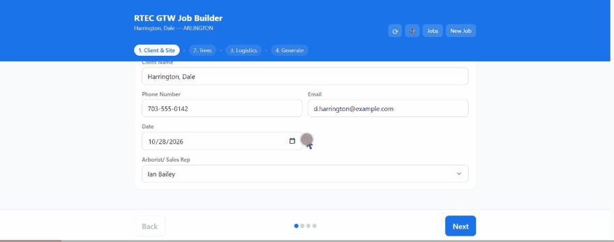
“Harrington, Dale — SingleOps #48217” is a made-up client on a real Arlington street, built to demonstrate the app. Nothing on this page is a live RTEC job.
The arborist owns
- Every tree, task, hour and price on site
- Photos, markup and a GPS fix per tree
- Permits, access and safety, with ticket numbers
- Generating the ZIP and uploading it to OneDrive the same day
The office owns
- Building the proposal from the report, top to bottom
- Picking the standard
GTW_item groups, never free-typing items - Tags, notes, deposit and the split visit
- Attaching the PDF and the photos to the job
00 Before the first job
Put it on the home screen, once
The Job Builder is a web app that installs like a native one. Do this in the office on wifi — the first load is the only one that needs a connection, because it caches itself and its PDF and ZIP libraries onto the device.
- Open
wncoakman.github.io/RTEC-GTW-Planner/in Safari (not Chrome — only Safari can install to the iOS home screen). - Tap Share → Add to Home Screen → Add. It appears as “GTW Builder”.
- Open it from the home screen once while still on wifi and let it finish loading. From then on it runs in airplane mode, on a property with no bars, indefinitely.
- In the Files app, tap Browse → ⋯ → Edit and switch OneDrive on. You will need it at the end of every job.
The three buttons in the header
- ↻ Update — checks the published version, saves the open job, installs the new one and reloads. A dot on the button means an update is waiting. Tap it in the office, not on a roof.
- 🐞 Report a problem — opens a pre-filled email with your device, app version and recent errors already in it. Use it instead of describing the bug from memory.
- Jobs — every job you have ever built stays on this device. Search by client, SingleOps # or city to reopen, copy or delete one.
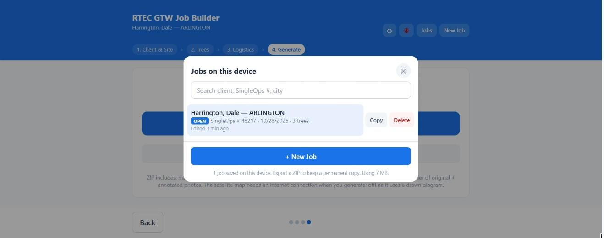
One job per property, per visit. New Job never deletes what you had open — the previous job is still under Jobs.
01 In the app
Client & Site
Six fields and a name. The one that matters most is the first one.
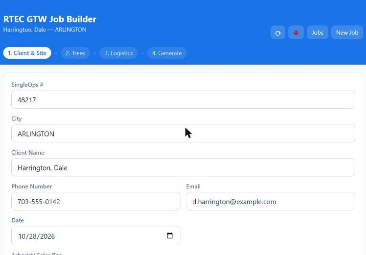
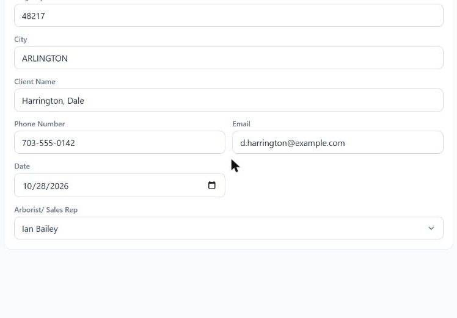
The SingleOps #. It becomes the report banner, the notecard title and — critically — the first part of every photo filename: 48217-1, 48217-2a. Leave it blank and the photos export as Tree #1 and 1a with no job reference at all, and the office cannot file them without renaming every one by hand.
No SingleOps # yet? Call the office and get the lead created before you walk the property.
02 In the app
Trees
The heart of it. One card per tree, numbered in the order you add them — and that number follows the tree all the way through to the site map pin, the photo filenames and the proposal line. Walk the property in a sensible order and the numbering takes care of itself.
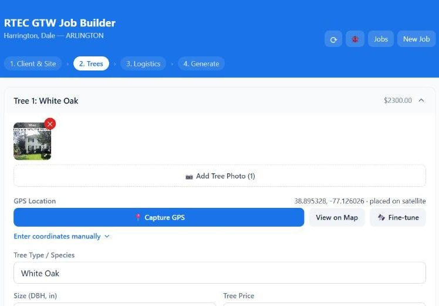
Photos, and marking them up
Add as many photos as the tree needs. Tap a thumbnail to blow it up, then ✏️ Edit to draw on it. Arrows, circles, freehand and text, six colours. The app keeps both versions — the untouched original and the marked-up copy — so the client-facing report shows your markup while the original is still there if anyone questions what was pointed at.
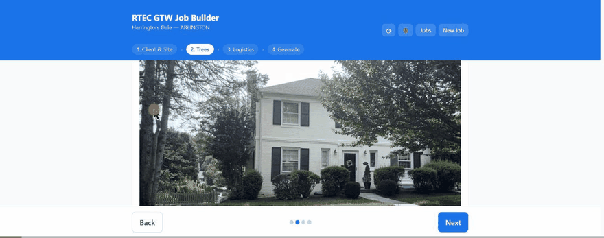
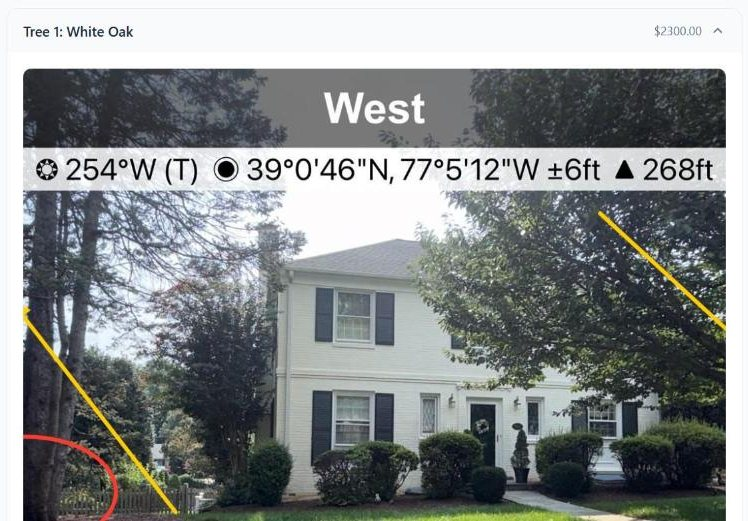
48217-1-edited.jpg, alongside 48217-1-original.jpg.Circle what you are charging for. A pruning line item is much easier to defend with an arrow on the actual co-dominant leader than with a paragraph of description.
GPS: capture, then fine-tune
📍 Capture GPS averages readings for 15 seconds, drops the outliers and weights what is left by accuracy — it works offline, because satellites are not the internet. Under a canopy it will still land you 8–15 m out. That is what Fine-tune is for: it drops you on satellite imagery with the GPS accuracy ring drawn in, and you drag the map until the crosshair sits on the trunk.
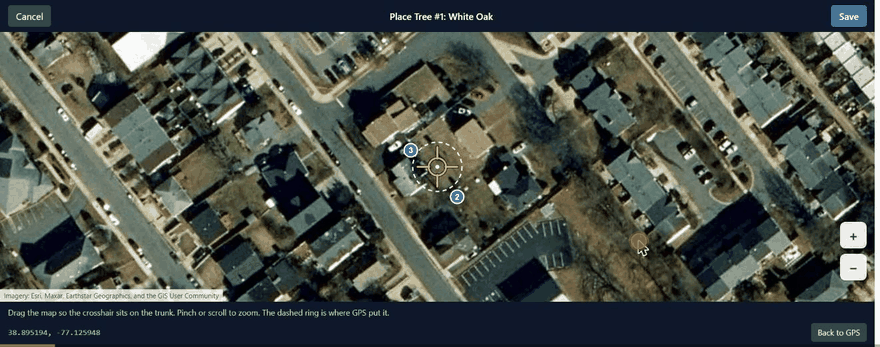
Any tree you would struggle to re-find from the coordinates alone: dense canopy, a row of similar trees, anything near a property line where the pin decides whose tree it is. The satellite step needs a connection — if you have no signal, capture GPS anyway and fine-tune from the truck.
Work tasks
Each tree carries its own tasks, lettered 1a, 1b, 2a. One task is one proposal line.
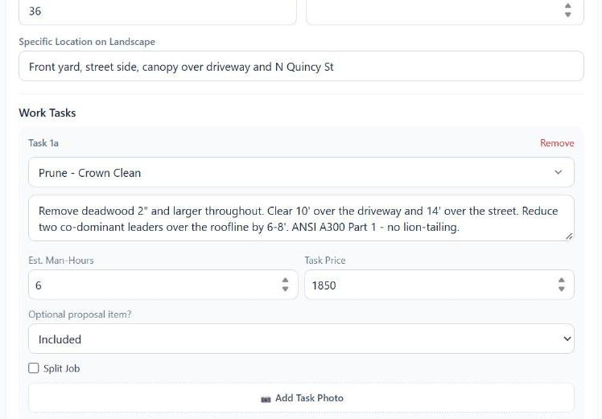
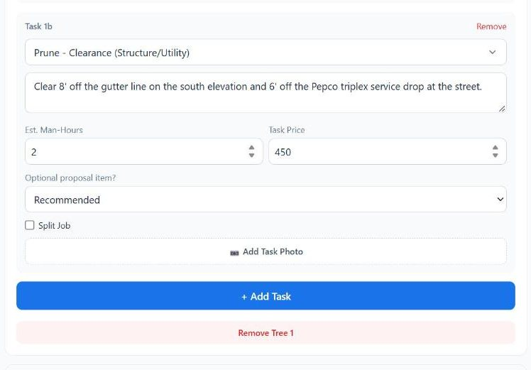
- Est. Man-Hours — crew hours, not elapsed time. The office enters these as
GTW Crew MHrsand they must never reach SingleOps as zero. - Optional proposal item? —
Included,RecommendedorOptional. This is what tells the office which lines are in the base price and which are upsell lines. It prints on the report as [RECOMMENDED]. - Split Job — tick it when the work needs a separate trip (the stump grind after the lane permit closes, a return visit for cabling). The report flags it [SPLIT JOB] and the notecard lists it under Split Visits, so the office knows to split the visit rather than schedule it all in one day.
Work that covers several trees, and PHC
Below the tree cards are two job-level sections. Use them instead of copying the same task onto four trees.
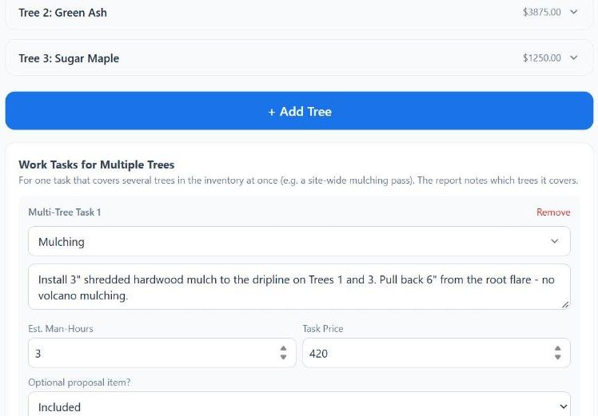
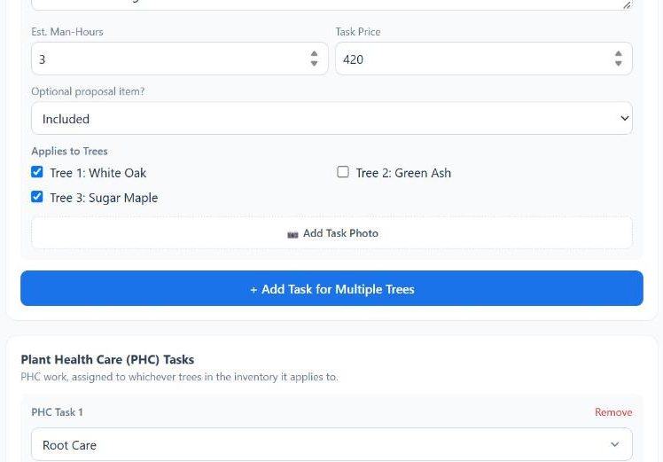
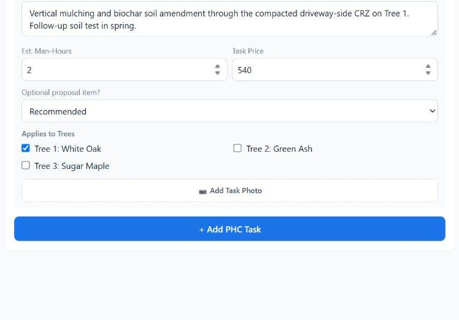
03 In the app
Logistics
This step is what stops a crew arriving without the right truck or the right permit. Everything here becomes a tag, a note or an equipment line on the job.
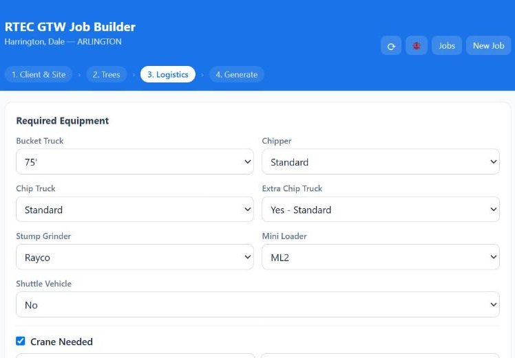
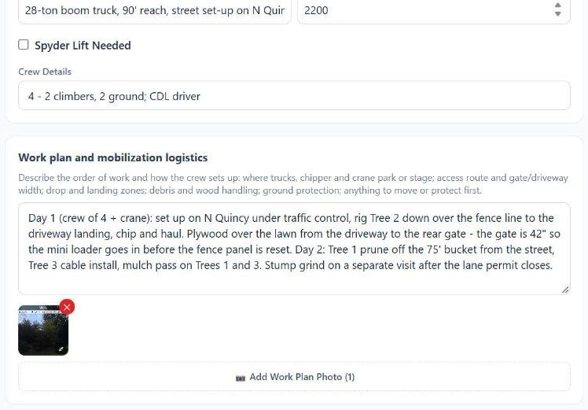
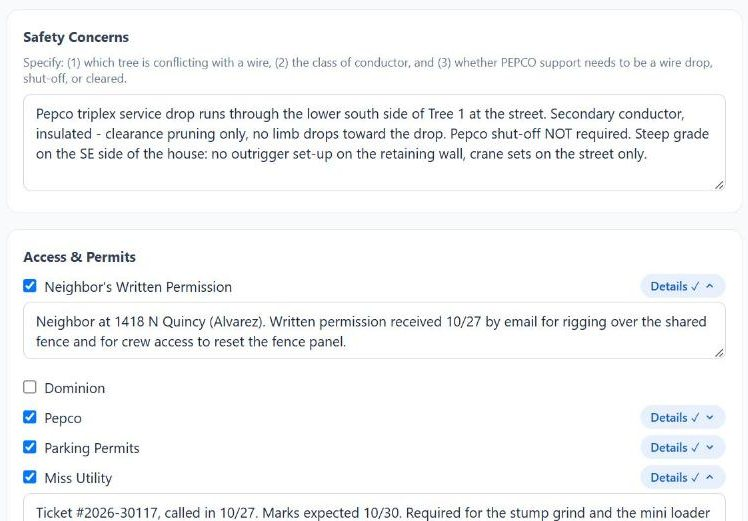
“Miss Utility ✓” on its own tells the office nothing. Ticket #2026-30117, called in 10/27. Marks expected 10/30. tells them whether the crane day can be booked. Same for parking permits — note who applies and how many business days’ lead the county wants.
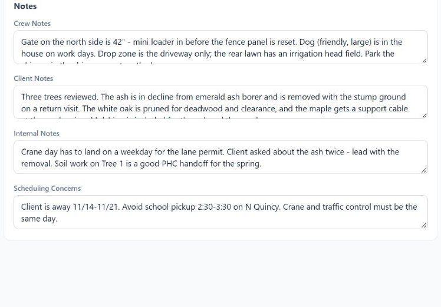
04 In the app
Generate
Check the grand total against what you quoted the client, then take the ZIP. The two single-PDF buttons exist for when you only need to hand the client or the crew one sheet — the office always wants the full bundle.
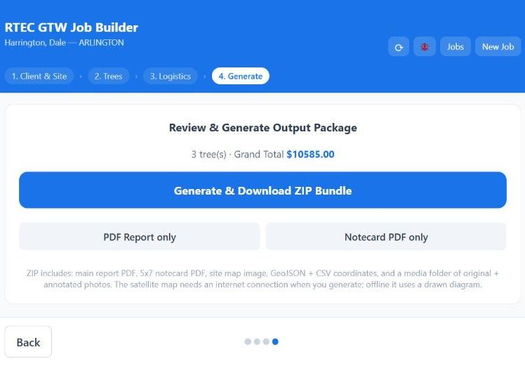
The satellite site map is fetched at the moment you press generate. With a connection you get aerial imagery with numbered pins. Without one, the app falls back to a drawn diagram and says so. If you generated the bundle with no bars, generate it again from the truck and upload that one.
05 What comes out
The export bundle
One ZIP, named for the client and the visit date. This is the actual bundle from the worked example:
The photo names are the whole trick: 48217-1 is tree 1 on job 48217, 48217-2a is task a on tree 2. They line up with the line items on the report, the pins on the site map and the attachment names on the SingleOps job, so nobody has to guess which photo goes with which charge.
The report — six pages, in proposal-entry order
The report is deliberately laid out in the order the office types a proposal. Work down it; do not jump around.
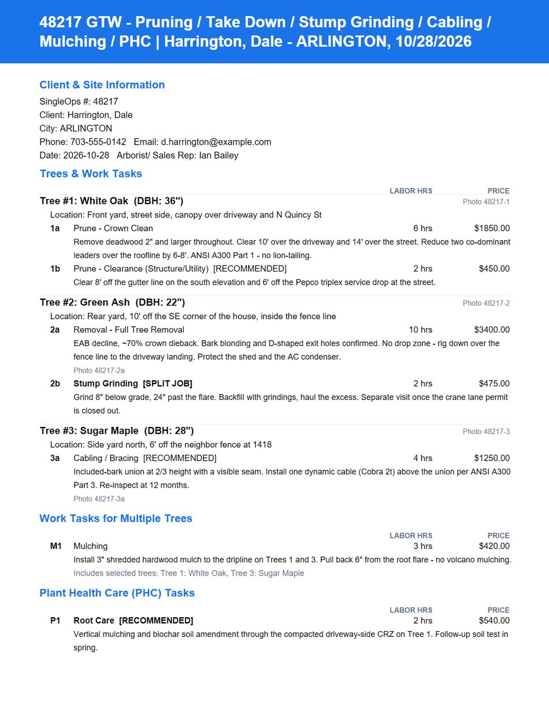
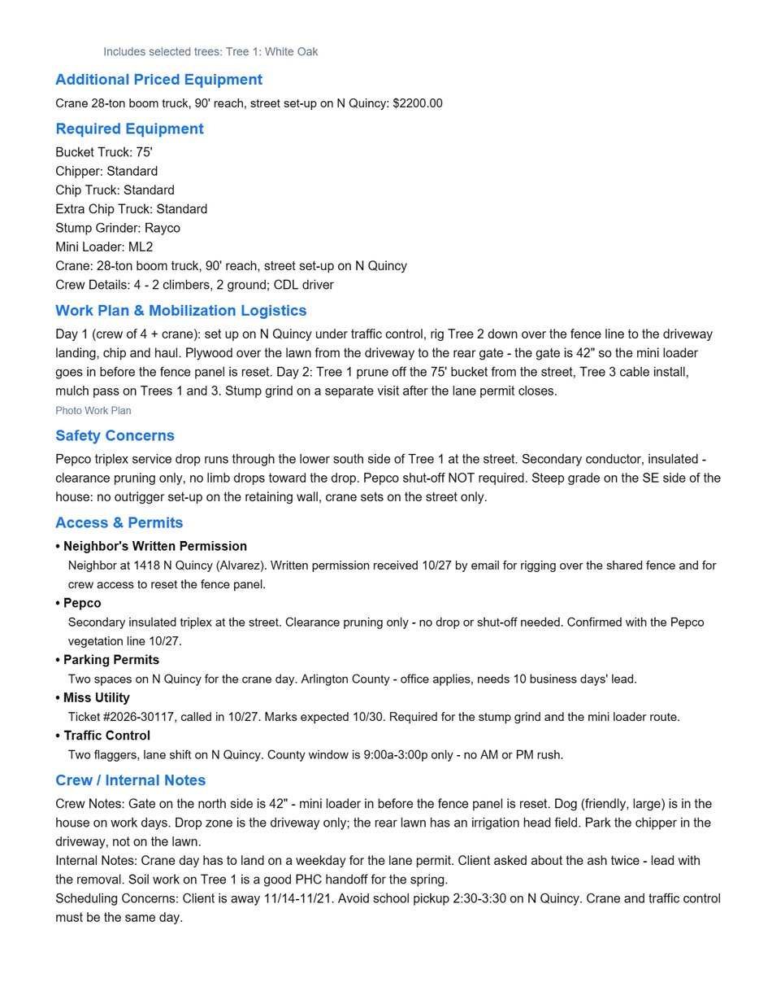
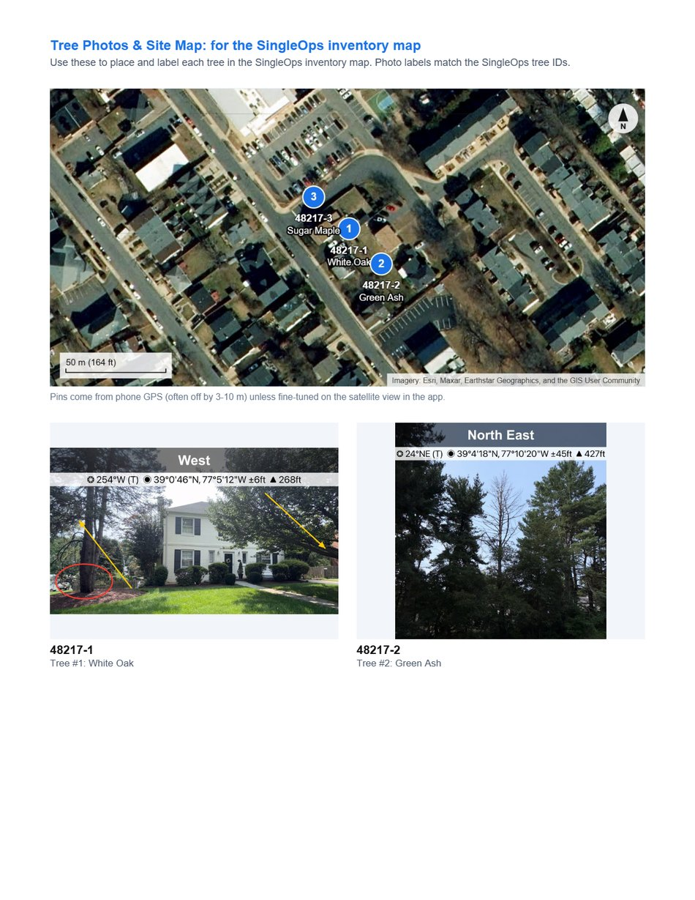
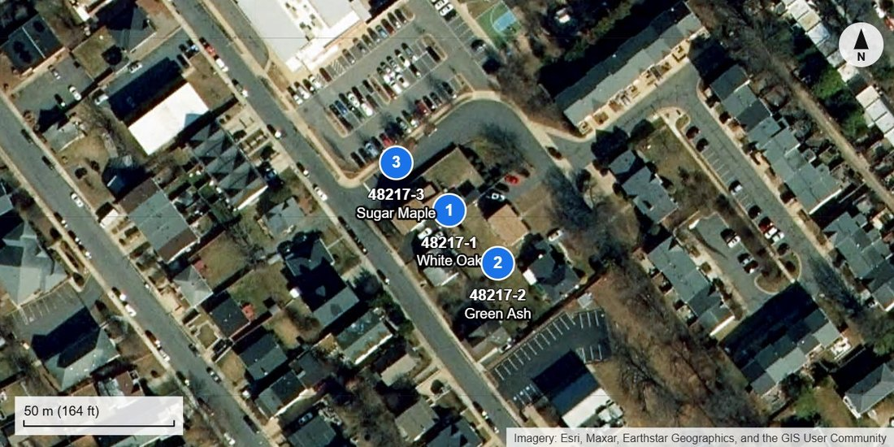
The notecard — the crew's sheet
A single 5×7 landscape card holding what a crew leader needs at the kerb and nothing else: total man-hours in the title, split visits, equipment, crew, work plan, permits, scheduling and safety. It deliberately leaves out the pricing that fills the main report.
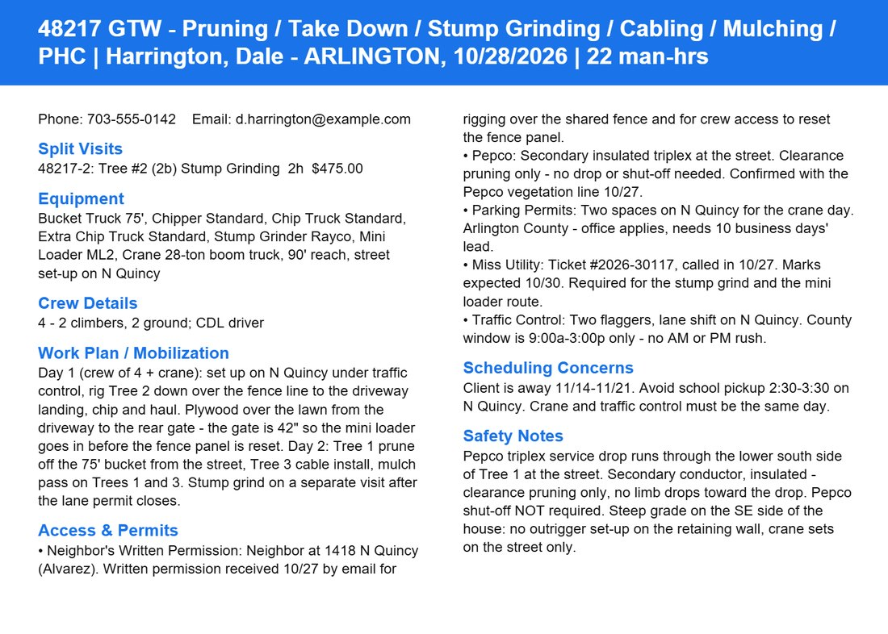
Coordinates
Two files carry the same three points, for whoever maintains the inventory map. The CSV opens in Excel; the GeoJSON drops straight into any mapping tool.
| Tree | Latitude | Longitude | ±m | Species | DBH |
|---|---|---|---|---|---|
| 1 | 38.895328 | −77.126026 | placed | White Oak | 36" |
| 2 | 38.895170 | −77.125840 | 3.8 | Green Ash | 22" |
| 3 | 38.895470 | −77.126230 | 5.1 | Sugar Maple | 28" |
Tree 1 shows placed rather than an accuracy figure because it was fine-tuned on the satellite image — which is the more trustworthy of the two.
06 On the device
Getting it to OneDrive
Do this before you leave the driveway, or at the latest before you go home. Until the bundle is in OneDrive it exists in exactly one place — that iPad.
Where it goes
The upload, on iOS
- Safari finishes the download — tap the ⤓ button beside the address bar, then the ZIP, to jump straight to it in Files. Otherwise it is in Files → On My iPad → Downloads.
- Tap the .zip once. iOS unpacks it into a folder of the same name, right next to it. Do this on the device, not at the office — the office should be able to open the report straight from OneDrive without downloading anything.
- Long-press the unpacked folder → Move.
- Choose OneDrive → RTEC Intranet - Documents → GTW Job Exports → 2026. Tap New Folder, name it
48217_Harrington, open it, then Move. - Wait for the cloud icon to turn into a ✓. That tick is the upload actually finishing — a progress ring means it is still going, and closing Files will pause it.
- Delete the leftover
.zipfrom Downloads so the next job's bundle is the only one there. - Open the SingleOps job and paste the OneDrive folder link into Internal Notes, so the office does not have to go looking.
From Safari's download list you can tap Share → Save to Files → OneDrive and skip straight to step 4 — but that saves the zipped bundle. Only use it when you are out of time, and unpack it at the office.
Generate the bundle anyway — everything but the satellite map works offline, and the job is saved on the device regardless. Regenerate and upload once you are back in range, so the office gets the aerial site map rather than the drawn fallback.
Naming, so the folder stays searchable
- Folder:
[SingleOps #]_[client surname]—48217_Harrington. The number first means the folder sorts and searches the same way the job does. - Never rename the files inside. Their names are what tie the photos to the line items and the map pins.
- A second visit to the same property gets its own folder under its own SingleOps #.
07 At the office
Building the SingleOps proposal
Open the report PDF beside SingleOps and work down page 1. The report was built in this order on purpose — client, then trees in order, then equipment, then tags, then notes.
Job settings first
- Operation GTW · Job Type One-Off · Per Visit invoicing
- Ref #
48217— the same number the arborist typed on step 1 - Sales Rep = the arborist on the report (Ian Bailey)
- Terms Due on receipt, and set the Tax Location
- Job Name = the visit location or a short description
The task names on the report are the app's vocabulary, not the SingleOps catalog's. Typing “Prune - Crown Clean” into the item search will create a near-duplicate item. Always pick the standard GTW_ group and fill its lines — that is what keeps reporting and the crew work-order layout intact.
One group line per tree
Here is the worked example, translated. Every figure comes straight off page 1 of the report.
| Report line | Group | Lines to fill | MHrs | Price | Status |
|---|---|---|---|---|---|
| Tree #1 · White Oak 36" 1a Prune – Crown Clean |
GTW_PR | Tree Species line with Tree # 1, White Oak, DBH 36; Pruning; GTW Crew MHrs | 6 | $1,850.00 | Included |
| 1b Prune – Clearance (structure / utility) |
GTW_PR | Add-on line on the same group — MP1"+ / clearance | 2 | $450.00 | Recommended |
| Tree #2 · Green Ash 22" 2a Removal – Full Tree |
GTW_TDC | Tree # 2, Green Ash, DBH 22; TDCB; Take Down-SW; HWO; GTW Crew MHrs; crane as an Equipment item | 10 | $3,400.00 | Included |
| 2b Stump Grinding [SPLIT JOB] |
GTW_SG | Same proposal, split the visit → second visit 48217-2; grinder as Equipment |
2 | $475.00 | Included |
| Tree #3 · Sugar Maple 28" 3a Cabling / Bracing |
GTW_TSS | Tree # 3, Sugar Maple, DBH 28; installation; cable materials; GTW Crew MHrs | 4 | $1,250.00 | Recommended |
| M1 Mulching Trees 1 & 3 |
site-wide | Material + labour lines; name the trees it covers in the line description | 3 | $420.00 | Included |
| P1 Root Care Tree 1 |
PHC | Not a GTW line — hand to PHC as its own proposal or a PHC lead | 2 | $540.00 | Recommended |
| Crane 28-ton, 90' reach |
Equipment | Priced equipment item on the removal group — never in the notes | — | $2,200.00 | Included |
Those eight lines total $10,585.00, which is the grand total on the app's Generate screen. If your proposal does not match that figure, something was mistyped — check before you send.
Equipment, tags and notes
Page 2 lists every truck and machine; page 3 hands you the tags already written out. Paste them, then add the house scheduling tags.
- Bucket Truck 75'
- Chipper Standard
- Chip Truck Standard
- Extra Chip Truck Standard
- Stump Grinder Rayco
- Mini Loader ML2
- Crane 28-ton boom truck
- Neighbor's Written Permission
- Pepco
- Parking Permits
- Miss Utility
- Traffic Control
- Crew: 4 – 2 climbers, 2 ground
Then the house tags on top: S-CREW 4, S-Property Size, P-Site Conditions, and the scheduling tags the arborist's Scheduling Concerns note calls for — here, a weekday for the lane permit and nothing during 11/14–11/21.
| On the report | In SingleOps |
|---|---|
| SingleOps # | Job → Ref # |
| Client, city, phone, email | Match to the existing Client record — do not create a duplicate |
| Arborist / Sales Rep | Job → Sales Rep |
| Tree + task lines | Proposal line items inside the GTW_ group |
| [SPLIT JOB] flag | A second visit on the same proposal, its own invoice |
| [RECOMMENDED] / [OPTIONAL] | Proposal line status — not deleted, offered |
| Equipment + permits + crew | Job → Tags (verbatim from page 3) |
| Crew / Client / Internal notes | The matching note fields — keep the total under 1,000 characters |
| Scheduling Concerns | Scheduling tags and the scheduler's note |
Report PDF + media/ photos | Job attachments — names already match the line items |
| Notecard PDF | Goes to the crew as the work order |
| GeoJSON / CSV + site map | Tree inventory map — manual import today |
50% when scheduled on one-off jobs — except Customer Type Commercial, Municipal or Government. Check the payment arrangement is on file and the client has no balance-due notice before anything gets scheduled.
Before you hand it over
- One-Off, Operation GTW, Sales Rep, Terms and Tax Location all set
- Every tree line carries Tree #, Species and DBH — they print on the GTW work order
- No group left on 0 GTW Crew hours; hours adjusted to this job, not left at the default
- Equipment on Equipment items, not described in a note
- The split visit exists, and the deposit rule matches the Customer Type
- Report PDF and photos attached; proposal total matches the app's grand total
08 When something is off
Quick fixes
| What you see | What happened | Fix |
|---|---|---|
Photos named Tree #1, 1a |
The SingleOps # was blank when the bundle was generated | Reopen the job, fill in step 1, generate again. Do not rename the files by hand. |
| Site map is a drawn diagram | No connection at the moment of generating | Regenerate in range and replace the folder in OneDrive. |
| A tree's pin is in the wrong yard | GPS fix under canopy, never fine-tuned | Fine-tune on the tree card, drag the crosshair to the trunk, save, regenerate. |
| A job has vanished | Almost never gone — just not the open one | Jobs in the header, search by client or SingleOps #. |
| ZIP will not send by email | Photo bundles run to several MB | It is not meant to be emailed. Upload to OneDrive and send the link. |
| App looks out of date | The device is running a cached older build | ↻ in the header on wifi — it saves the open job first, then reloads. |
| Storage warning on the Jobs screen | Photos from finished jobs still on the device | Once the bundle is safely in OneDrive, delete the job from Jobs. |
Anything else — use the 🐞 button in the app header. It writes the email with the device, app version and the recent errors already filled in, which is worth far more than a description after the fact.